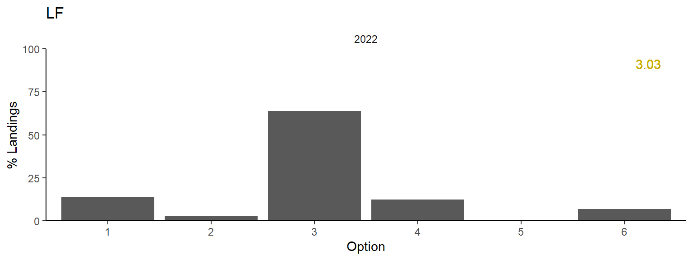
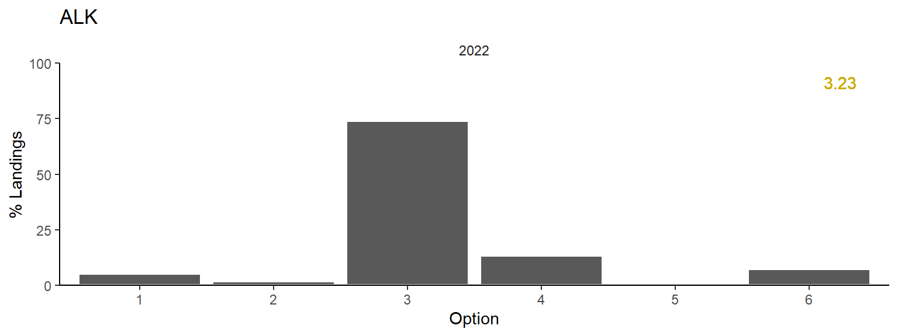

Catch-at-age: test 2022
2024-09-10
1 SET-UP
1.1 settings
source('0.0_settings.R')1.2 load all data
load(paste0(dir.rdat, "catch.caa.Rdata")) # from 2.0 caa
load(paste0(dir.rdat, "bio.caa.Rdata")) # from 2.0 caa
load(paste0(dir.rdat, "lf.caa.Rdata")) # from 2.0 caa
lf.caa <- lf.caa[,c("year","period","gear","region","sample.id","length","weight.unit","n")]
load(paste0(dir.rdat, "caa.Rdata")) # from 2.0 caa - default caa2 CATCH-AT-AGE
redo <- T
catch.diffusedRsim <- paste0(dir.rdat, "catch.diffused.2022.oldlandings.Rdata")
caaRsim <- paste0(dir.rdat, "caa.2022.oldlandings.Rdata")
if(redo){
# change landings for 2022
years <- 2017:2021
catch.sim <- ddply(catch.caa[catch.caa$year %in% years,],c('region','period','gear'),summarise,catch=mean(catch)) # average proportions of last years
catch.sim$catch <- catch.sim$catch/sum(catch.sim$catch)*sum(catch.caa[catch.caa$year==2022,'catch']) # rescale to 2022 total catch
catch.sim$year <- 2022
# re-estimate
catch.diffused.sim <- get.samples(catch=catch.sim,
lf=lf.caa,
al=bio.caa,
min.lf.samples =2, # min samples for length-frequency
min.al.samples =2, # min samples for age-length key
min.al.fish = 12,
period.unit='quarter', # quarterly grouping instead of monthly
prob.al=0.75) # max probability with which for a given length an age class might be missing in stratum specific ALK
catch.diffused.sim$age.0 <- NULL # remove age 0 (total landings somewhat smaller)
save(catch.diffused.sim, file = catch.diffusedRsim)
# step 2) get actual caa
caa.sim <- get.caa(x=catch.diffused.sim,plus=10)
save(caa.sim, file = caaRsim)
}else{
load(catch.diffusedRsim)
load(caaRsim)
}
## | | | 0% | |== | 2% | |===== | 4% | |======= | 5% | |========= | 7% | |=========== | 9% | |============== | 11% | |================ | 12% | |================== | 14% | |===================== | 16% | |======================= | 18% | |========================= | 19% | |=========================== | 21% | |============================== | 23% | |================================ | 25% | |================================== | 26%
## Warning in FUN(X[[i]], ...): ** for catch stratum 16 some lengths in the length distribution might be of an age not present in the
## age-length key**
## | |==================================== | 28% | |======================================= | 30% | |========================================= | 32% | |=========================================== | 33% | |============================================== | 35% | |================================================ | 37% | |================================================== | 39% | |==================================================== | 40% | |======================================================= | 42% | |========================================================= | 44% | |=========================================================== | 46% | |============================================================== | 47% | |================================================================ | 49% | |================================================================== | 51% | |==================================================================== | 53% | |======================================================================= | 54% | |========================================================================= | 56% | |=========================================================================== | 58% | |============================================================================== | 60% | |================================================================================ | 61% | |================================================================================== | 63% | |==================================================================================== | 65% | |======================================================================================= | 67% | |========================================================================================= | 68% | |=========================================================================================== | 70% | |============================================================================================== | 72% | |================================================================================================ | 74% | |================================================================================================== | 75% | |==================================================================================================== | 77% | |======================================================================================================= | 79% | |========================================================================================================= | 81% | |=========================================================================================================== | 82% | |============================================================================================================= | 84% | |================================================================================================================ | 86% | |================================================================================================================== | 88% | |==================================================================================================================== | 89% | |======================================================================================================================= | 91% | |========================================================================================================================= | 93% | |=========================================================================================================================== | 95% | |============================================================================================================================= | 96% | |================================================================================================================================ | 98% | |==================================================================================================================================| 100%
write.csv(caa.sim,paste0('csv/',tail(my.year,1),'/caa202priorlandings.csv'))
2.1 Plots
2.1.1 Counts
plotAttribution(catch.diffused.sim)
2.1.2 %catch per option (lf, annual)
plotQuality(x=catch.diffused.sim,"option.lengthfreq",annual=TRUE)+geom_hline(yintercept=0.5,col='lightgrey')
2.1.3 %catch per option (alk, annual)
plotQuality(x=catch.diffused.sim,"option.agelength",annual=TRUE)+geom_hline(yintercept=0.5,col='lightgrey')
2.1.4 CAAN
plotCaan(caa.sim)
2.2 Compare
caa.default <- caa[caa$year%in%c(2021,2022),]
caa.default$run <-'default'
caa.sim$run <-'prior.landings'
caa.sim21 <- caa.sim
caa.sim21$year <- 2021
caa.sim21$caan <- 0
caa.comp <- rbind(caa.default,caa.sim,caa.sim21)
caa.comp <- ddply(caa.comp,c('year','run'),transform,caan.prop=caan/sum(caan))
ggplot(caa.comp,aes(x=as.factor(age),y=caan.prop,fill=run,group=run))+
geom_bar(stat='identity',position='dodge')+
facet_grid(year~.)+
scale_y_continuous(expand=c(0,0))+
labs(y='Proportion landed',x='Age')+
theme(legend.position = 'top')
## Warning: Removed 9 rows containing missing values or values outside the scale range (`geom_bar()`).
3 Regional age proportions in samples
By region, across all samples, independent of gear types, period, sample weight.
redo <- T
catch.diffusedRsimreg <- paste0(dir.rdat, "catch.diffused.2022.reg.Rdata")
caaRsimreg <- paste0(dir.rdat, "caa.2022.reg.Rdata")
these.regions <- c('SS','sGSL','wNL','eNL','nGSL')
if(redo){
catch.diffused.reg <- ldply(these.regions,function(x){
print(x)
years <- 2022
lf.reg <- lf.caa[lf.caa$region==x & !is.na(lf.caa$region) & lf.caa$year %in% years,]
al.reg <- bio.caa[bio.caa$region==x & !is.na(bio.caa$region) & bio.caa$year %in% years,]
ca.reg <- data.frame(year=2022,region=x,period=NA,gear=NA,catch=1) # !!! index like !!!! age-comp across all samples
catch.diffused <- get.samples(catch=ca.reg,
lf=lf.reg,
al=al.reg,
min.lf.samples =1, # min samples for length-frequency
min.al.samples =1, # min samples for age-length key
min.al.fish = 1,
period.unit='quarter') # quarterly grouping instead of monthly
catch.diffused$age.0 <- NULL # remove age 0 ?? (total landings somewhat smaller)
return(catch.diffused)
})
save(catch.diffused.reg, file = catch.diffusedRsimreg)
caa.reg <- ddply(catch.diffused.reg,c('region'),function(x){x[is.na(x)]<-0;get.caa(x,plus=10)})
save(caa.reg, file = caaRsimreg)
}else{
load(caaRsimreg)
load(catch.diffusedRsimreg)
}
## [1] "SS"
## | | | 0% | |==================================================================================================================================| 100%[1] "sGSL"
## | | | 0% | |==================================================================================================================================| 100%[1] "wNL"
## | | | 0% | |==================================================================================================================================| 100%[1] "eNL"
## | | | 0% | |==================================================================================================================================| 100%[1] "nGSL"
## | | | 0% | |==================================================================================================================================| 100%3.1 output
caa.reg <- ddply(caa.reg,c('region'),transform,caan.prop=caan/sum(caan))
ggplot(caa.reg,aes(x=as.factor(age),y=caan.prop,fill=region))+
geom_bar(stat='identity',position='dodge')+
labs(y='Proportion',x='Age',fill='Region')+
scale_y_continuous(expand=c(0,0))+
scale_fill_viridis_d()
3.2 length
See length dist of samples. ribbon is 50% of samples
len <- ddply(lf.caa[lf.caa$year==2022,],c('year','region','gear','period','sample.id'),transform,prop=n/sum(n))
lens <- ddply(len,c('region','length'),summarise,m=median(prop),low=quantile(prop,0.25),high=quantile(prop,0.75))
ggplot(lens,aes(x=length))+
geom_ribbon(aes(ymin=low,ymax=high),alpha=0.2)+
geom_line(aes(y=m))+
scale_y_continuous(expand=c(0,0))+
facet_wrap(~region,scale='free_y',ncol=1)+
labs(y='Proportion',y='Length (mm)',fill='Region',col='Region')